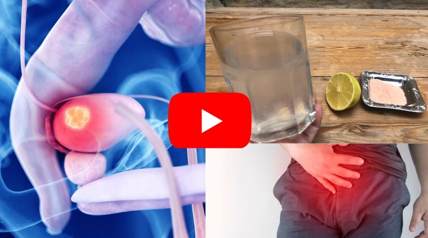

Truco Asiático que Desinflama La Próstata 5 veces más rápido que los medicamentos.(aprende en casa).
Diferente de la Finasterida y Dutasterida, "esta Solución Asiática" es 5 veces más barata y reduce la próstata sin disminuir la energía y vitalidad masculina después de los 40 años.
Chorro de orina débil. Gotita a gotita, frecuentes visitas al baño durante el día y baja libido, estos fueron algunos síntomas que mi padre experimentó durante varios años con la próstata inflamada, pero eso revirtió este problema con una solución asiática.
 A diferencia de la mayoría de los hombres mayores de 40 años, que fueron influenciados por el sistema médico para tomar finasterida, dutasterida o someterse a raspado de la próstata, el investigador James Rodríguez reveló una solución que surgió del otro lado del mundo, en el sur de Japón!
A diferencia de la mayoría de los hombres mayores de 40 años, que fueron influenciados por el sistema médico para tomar finasterida, dutasterida o someterse a raspado de la próstata, el investigador James Rodríguez reveló una solución que surgió del otro lado del mundo, en el sur de Japón!
La solución fue revelada hace unos meses, después de 15 años de estudio, investigación y pruebas, y demostró ser capaz de reducir la próstata inflamada sin disminuir la energía y vitalidad masculina después de los 40 años, sin efectos secundarios y de manera fácil de hacer en casa en menos de 1 minuto.
En su video oficial, revela el paso a paso exacto de los hombres asiáticos para desinflamar la próstata y tener un chorro fuerte y potente como una manguera de bombero, haz clic en el botón o en la imagen y mira un breve video gratuito que James Rodríguez acaba de publicar mostrando todo el paso a paso.
Chorro de orina débil. Gotita a gotita, frecuentes visitas al baño durante el día y baja libido, estos fueron algunos síntomas que mi padre experimentó durante varios años con la próstata inflamada, pero eso revirtió este problema con una solución asiática.
A diferencia de la mayoría de los hombres mayores de 40 años, que fueron influenciados por el sistema médico para tomar finasterida, dutasterida o someterse a raspado de la próstata, el investigador James Rodríguez reveló una solución que surgió del otro lado del mundo, en el sur de Japón!La solución fue revelada hace unos meses, después de 15 años de estudio, investigación y pruebas, y demostró ser capaz de reducir la próstata inflamada sin disminuir la energía y vitalidad masculina después de los 40 años, sin efectos secundarios y de manera fácil de hacer en casa en menos de 1 minuto.
En su video oficial, revela el paso a paso exacto de los hombres asiáticos para desinflamar la próstata y tener un chorro fuerte y potente como una manguera de bombero, haz clic en el botón o en la imagen y mira un breve video gratuito que James Rodríguez acaba de publicar mostrando todo el paso a paso.
 Haz click aquí para ver el vídeo